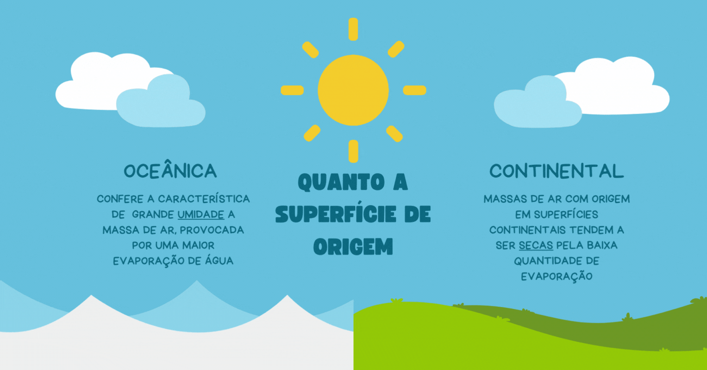
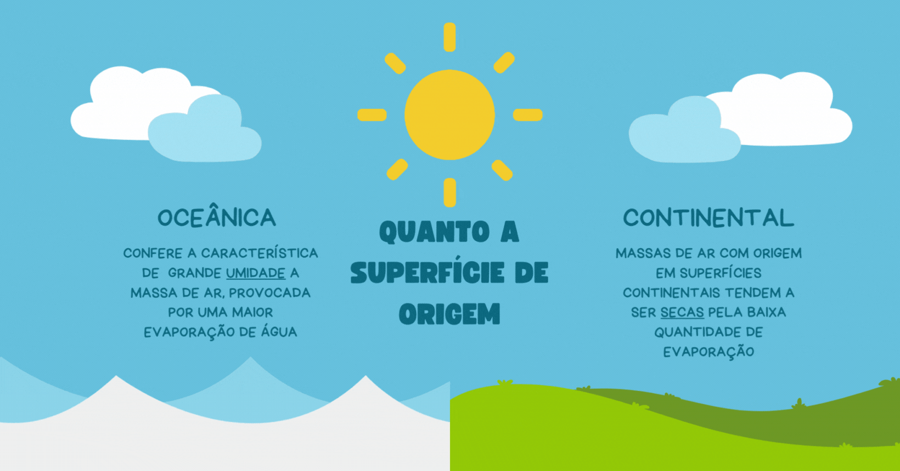

Exercícios
de
Você já parou para pensar como gigantescas "entidades" invisíveis podem moldar o clima ao redor do mundo? As massas de ar são como entidades misteriosas que vagam pelos céus, trazendo consigo temperaturas extremas, umidade intensa e até mesmo a queda brusca de termômetros. Elas são as protagonistas por trás das mudanças climáticas que experimentamos diariamente. Conhecer os segredos e as peculiaridades dessas massas de ar pode nos levar a uma jornada fascinante pelo mundo da meteorologia, revelando os mistérios que nos cercam e despertando a curiosidade para explorar ainda mais sobre esse fenômeno tão poderoso e intrigante
saiba mais"As massas de ar são como as tintas invisíveis da atmosfera, misturando-se e pintando o cenário do nosso clima com cores de temperatura e umidade."
As massas de ar são grandes porções de ar que compartilham características semelhantes, como temperatura, pressão e umidade, ao se formarem em determinadas regiões da atmosfera, mais especificamente, na camada mais baixa: a troposfera. Elas desempenham um papel importante na determinação do clima e das condições meteorológicas de uma determinada área. Essas estruturas são formadas quando uma grande quantidade de ar permanece sobre uma área extensa por um período significativo. Durante esse tempo, a massa de ar é influenciada pelas características da superfície terrestre abaixo dela. Dependendo da origem e do trajeto percorrido, as massas de ar podem adquirir diferentes características, principalmente em relação à temperatura e umidade. Para entender melhor as massas de ar, vamos explorar os tipos existentes, as massas de ar do Brasil e como elas influenciam o clima.
Massas de ar podem ser classificadas quanto ao seu local de origem e posição com relação a latitude de que são provenientes. Existem quatro tipos básicos de massas de ar quanto a latitude: massa de ar Equatorial, massa de ar Tropical, massa de ar Polar e massa de ar Ártica, também chamada de Antártica. A massa de ar Equatorial é quente e úmida, sendo originada nas regiões mais próximas à Linha do Equador. A massa de ar Tropical pode ser quente e úmida ou quente e seca, dependendo de sua origem e trajeto. A massa de ar Polar é fria e seca, originada nas regiões polares. Já a massa de ar Ártica é extremamente fria e seca, originada nas regiões do Ártico ou Antártica. Além desta classificação quanto a latitude, a superficie onde são geradas também pode influenciar nas suas características, massas de ar oceânicas tendem a ser mais umidas que as continentais, isso se da pela evaporação das águas que ocorre de maneira muito mais abundante nas superfícies oceânicas que nas continentais.
As massas de ar exercem uma grande influência no clima, pois ao se deslocarem, levam consigo algumas das características de temperatura e umidade que adquiriram em sua região de origem. Quando uma massa de ar encontra outra de características diferentes, ocorrem as chamadas "frentes", que são áreas de transição entre essas massas de ar. Nas frentes, podem ocorrer mudanças bruscas de temperatura, alterações na umidade e a formação de chuvas. Além disso, as massas de ar também afetam a dinâmica dos ventos, a formação de nuvens e a ocorrência de eventos meteorológicos como tempestades e tornados.
No Brasil, as massas de ar desempenham um papel fundamental na determinação das condições climáticas. Existem cinco massas de ar de grande atuação no território brasileiro:

 
